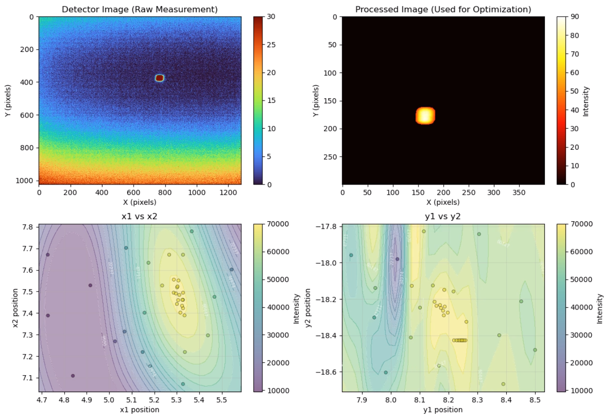

Blop#
a BLuesky Optimization Package
What is Blop?#
Blop is a Python library for performing optimization for Bluesky experiments. It is designed to integrate nicely with the Bluesky ecosystem and primarily targets rapid data acquisition and control.
Our goal is to provide a simple and practical data-driven optimization interface for Bluesky-driven experimentation.

Autonomous alignment visualization using Bayesian optimization.
Installation#
Via PyPI
Standard (GPU support):
$ pip install blop
CPU-only (containers, CI/CD, laptops):
$ pip install uv
$ uv pip install blop[cpu]
Via Conda-forge
Standard:
$ conda install -c conda-forge blop
CPU-only:
$ conda install -c conda-forge blop pytorch cpuonly -c pytorch
For additional installation instructions, refer to the Installation guide.
Learn More!#
Step-by-step guides to get started with Blop fundamentals and basic workflows.
Practical recipes and solutions for specific beamline optimization tasks.
Complete API documentation, class references, and technical specifications.
Version updates, new features, bug fixes, and changelog for the current release.
References#
If you use this package in your work, please cite the following paper:
Morris, T. W., Rakitin, M., Du, Y., Fedurin, M., Giles, A. C., Leshchev, D., Li, W. H., Romasky, B., Stavitski, E., Walter, A. L., Moeller, P., Nash, B., & Islegen-Wojdyla, A. (2024). A general Bayesian algorithm for the autonomous alignment of beamlines. Journal of Synchrotron Radiation, 31(6), 1446–1456. https://doi.org/10.1107/S1600577524008993
BibTeX:
@Article{Morris2024,
author = {Morris, Thomas W. and Rakitin, Max and Du, Yonghua and Fedurin, Mikhail and Giles, Abigail C. and Leshchev, Denis and Li, William H. and Romasky, Brianna and Stavitski, Eli and Walter, Andrew L. and Moeller, Paul and Nash, Boaz and Islegen-Wojdyla, Antoine},
journal = {Journal of Synchrotron Radiation},
title = {A general Bayesian algorithm for the autonomous alignment of beamlines},
year = {2024},
month = {Nov},
number = {6},
pages = {1446--1456},
volume = {31},
doi = {10.1107/S1600577524008993},
keywords = {Bayesian optimization, automated alignment, synchrotron radiation, digital twins, machine learning},
url = {https://doi.org/10.1107/S1600577524008993},
}